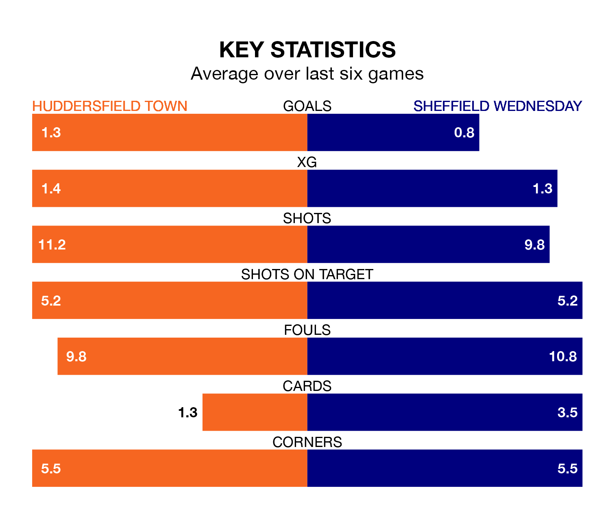

Saturday's match at the John Smith's Stadium sees two relegation candidates play each other, as 21st-ranked Huddersfield Town host 23rd-placed Sheffield Wednesday.
Huddersfield have picked up 28 points from their first 28 EFL Championship games, with five wins and 13 draws.
That is five points more than the Owls have collected, having won six and drawn five.
In the last 10 years, Huddersfield and Wednesday have played each other on 15 occasions. Huddersfield won one of them, Wednesday six, and they drew eight times.
On average, the Terriers scored 0.4 goals and the Owls 0.9 in those matches.
Their last meeting was on October 7, when they played out a 0-0 draw.
Huddersfield are in disappointing form in EFL Championship, with one win and three draws from their last six games.
With two wins and a draw over that period, Wednesday's form is slightly better – they have taken seven points from 18, compared to Town's six.
With 22 goals in 29 games so far this season, the Owls are the league's lowest scorers with 0.8 goals per game. And they are conceding more than average, letting in 46 goals at a rate of 1.6 per game.
The Terriers are also below average scorers, with 1.0 goal per game, compared to a league average of 1.4. They have conceded 1.6 goals per game.
Huddersfield's last match was on Sunday, a 1-1 draw against Queens Park Rangers, with Jack Rudoni getting the goal for the Terriers.
Wednesday drew 0-0 with Watford last time out, on Wednesday.
Saturday's match will be refereed by Matt Donohue, who has taken charge of 17 EFL Championship games so far this season, issuing one red card and booking 74 players. He has awarded two penalties.
The last Huddersfield game Donohue refereed was a 2-1 away win against Sunderland on November 29. His last Wednesday match was their 3-1 loss away at Norwich City on December 13.
Updated: 14:12 (UTC), 02/02/24